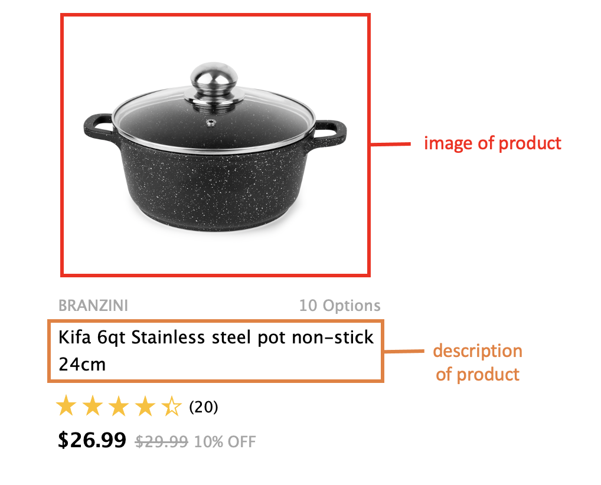
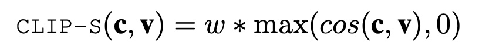
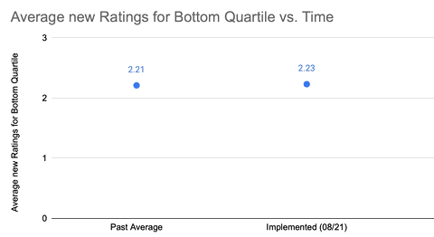

#deployed-applications-of-ai #deep-learning #e-commerce
Anonymous Authors
In this paper, we introduce Multimodal Validity Protection (MVP), a tool that we developed and deployed on e-commerce websites to flag untrustworthy products. E-commerce platforms currently face an issue of scalability in using human reviewers for approving new products, while recent advances in multimodal machine learning have enabled models to achieve much higher performance in the image captioning task. Together, these motivate our development of MVP - a tool that detects the trustworthiness of a product by reframing its images and description as image-caption pairs and performing caption evaluation. Since its deployment in August 2021, MVP has significantly improved customer ratings given to the bottom quartile of products on the platform, while also achieving low false positive/negative rates in the existing product library.
Obtaining and keeping consumer trust has been a growing challenge in the e-commerce marketplace. As online platforms for e-commerce become larger, consumers rely more on the brand of the marketplace, placing the responsibility of fraud detection completely upon the platform. In the meanwhile, e-commerce products have also diversified and increased, causing a scalable automated checking mechanism to be both challenging yet greatly demanded.
The conventional solution to deal with fraudulent products or sellers is to have a human review all products by hand. Though some large platforms use automated methods to evaluate or generate the textual descriptions of products, none have included images as part of their automated checks due to technical limitations.
However, a wave of recent advances in multimodal machine learning have introduced new possibilities for combining visual and textual information. Multimodal Validity Protection (MVP) is a novel application of recent progress in the image caption evaluation task, which rates computer-generated captions for target images. In this task, a higher score reflects that the caption captures the important details of the image, while a low score indicates inconsistencies found between the image and caption. By treating product descriptions as captions to product images, we obtain a strong heuristic for detecting products inconsistent to the human eye.
In this paper, our contributions are twofold: First, we present the novel application of image caption evaluation onto e-commerce product validation, and demonstrate the feasibility through the design and development of MVP. Second, we evaluate MVP in real scenarios through a consumer study on a live e-commerce platform, and confirm that the image-caption perspective is compatible with the application.
The image caption evaluation task can be viewed as a specific type of Turing Test. Image-caption pairs are inputted to some metric, and the metric outputs a score of how likely it is that the caption was written by a human.
The most commonly known metrics for this task, such as BLEU, ROGUE, and METEOR, use a reference caption, which is another caption for the same image written by a human. By doing so, these methods ignore the image in favor of strictly comparing the caption to the reference caption.
Newer approaches have also incorporated the image input, such as TIGEr and VILBERTScore-F. However, they retain their reliance on the reference caption. Any of these methods would cause an issue in our e-commerce application setting, as we cannot easily obtain reference captions for products. To acquire reference captions would defeat the purpose of our tool, which was to save human resources in the first place.
Our tool centers around the recent groundbreaking work “CLIPScore: A Reference-free Evaluation Metric for Image Captioning”. CLIPScore evaluates the quality of an image and caption without relying on a reference caption, while boasting a wide knowledge base of 400M image-caption pairs from the web, making it ideal for the diverse world of e-commerce products.
For the model, CLIPScore uses CLIP, a pre-trained model that is able to perform a wide set of language-image tasks. CLIP is trained on 400 million image-caption pairs of varying complexity, with the goal of predicting whether the input image and text snippet are paired together in its dataset. It has been shown to be competitive with task-specific supervised models without learning any additional information about those tasks.
For MVP to use CLIP most effectively in its environment, we first remove the product brand from the description to avoid their ambiguity. For instance, Dove soap would score lower than Bath & Body from its out-of-context meaning. Next, product images and descriptions are passed through CLIP’s separate text and image channels. Following CLIPScore, we use cosine similarity to compute the trustworthiness.
Here, w is a scaling hyperparameter set to 2.5, c is the description after passing through the text channel, and v is the image after passing through the image channel.
For products with multiple images, we run the model with each image separately as input, as there are often images of brands or packaging that may confuse the model. We use the maximum score across images for each product.
Starting from August 2021, MVP was deployed onto a large international e-commerce platform for food, snacks, and household appliances. Here, it served two purposes: First, MVP was used to filter through existing products to search for clearly fraudulent products. Second, MVP has been implemented as part of the new product screening process as part of a human-in-the-loop rescinding system. The former also served as a mock trial to predict how well the latter would do.
In the first step, we randomly sampled 2,000 products from all categories of the e-commerce platform, and check the validity of them through MVP. After rescaling so that scores were in [0, 1], with 1 representing most trustworthy, we observed that 95% of products scored above 0.7. Using this as a threshold for trusting a product, we compared the outputs with an approximate ground-truth generated by the site’s quality assurance workers.
Using the trial step as a springboard, we conducted a large customer study over the entire e-commerce platform to determine the extent to which MVP affects the consumer experience. Before and after deployment, we measured the average new ratings given by customers to the lowest-rated quartile of products, which acts as a proxy to suspicious items on the site. Since MVP mainly removes fraudulent products, its biggest change would undoubtedly be at this tail of the distribution. If MVP is doing a perfect job, fraudulent products in this category should be removed and replaced by better-performing products, yielding significant increases in the average rating.
In the trial step, of the 2,000 products, MVP labeled 98 as untrustworthy and 1902 otherwise. Of these 98 products, based on human inspection we found 24 to be legitimate, yielding a sample false positive rate of 24.5%. For the remaining 1902, we inspected a randomly sample of 100 products, all of which were legitimate. This leads us to believe that the false negative rate across the entire platform is very low.
Our primary metric features a large consumer study combining aggregated data over 10,000 products available to ten countries, for a total of over 100,000 data points. Customers who purchase a product are allowed to rate it on a 5-point likert scale. As shown in the figure, the average consumer impressions of lowest-rated products have risen since deployment, demonstrating MVP’s success in fulfilling its role.
Recent multimodal methods have spurred the development of new applications across the world. In this paper, we demonstrate through MVP that the recent progress in machine learning-powered image caption evaluation can be applied successfully to evaluating e-commerce products. By making slight adaptations, we are able to transfer existing image-caption model CLIP to perform in and improve real e-commerce platforms. Furthermore, our study hints that these ideas are able to reach the consumers’ experiences, showing that MVP and image-caption evaluation applications to e-commerce cross beyond theorycrafting and into reality.